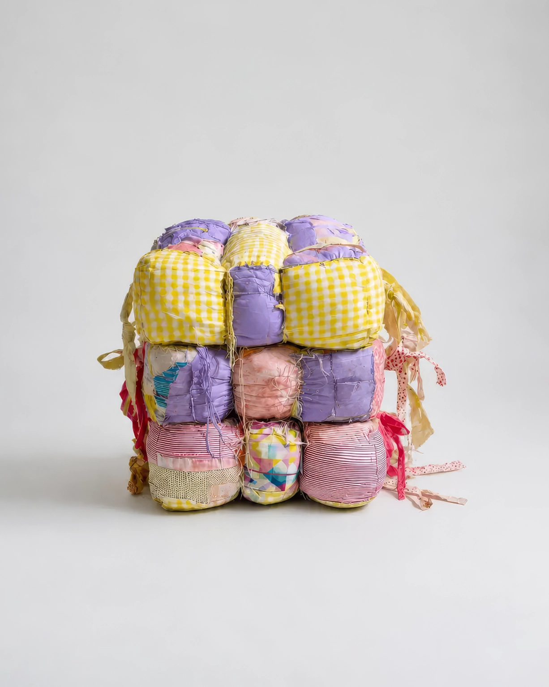

No.05 Adaptive Device
Compact Posture Cushion, 2044
압축된 생활 자세를 안정적으로 유지하기 위해 개발된 신체 적응 장치이다. 여러 개의 독립된 쿠션 모듈이 팔, 다리, 몸통 사이의 빈 공간을 채우며 신체를 지지한다. 사용자의 체형과 자세에 따라 쿠션은 점차 변형되어 신체를 감싸고, 웅크린 자세를 가장 안정적인 휴식 자세로 유지하도록 돕는다.
- 크기/무게
- W: 90, H: 90(cm) / 1.23(kg)
- 재질
- 면직물, 폴리에스터 충전재, 우레탄 폼, 면 스트랩
- 사용 목적
- 좁은 공간에서 장시간 웅크린 자세를 유지할 때 발생하는 신체의 빈 공간을 지지하고 체압을 분산하여, 최소한의 면적 안에서도 안정적인 휴식과 수면이 가능하도록 한다.
- 유도 자세
-
척추를 C자 형태로 굴곡
무릎을 가슴 가까이 당긴 자세
양팔을 몸통에 밀착
팔·다리·몸통이 서로 맞물린 압축 자세 유지 - 추정 환경
-
취미 용품이 많은 1인 가구
책, 피규어, 레코드 등 개인 소장품을 보관하는 협소주택
생활 공간보다 수집 공간을 우선시하는 초소형 주거 - 추정 사용
- 웅크린 자세에서 신체 각 부위 사이에 쿠션을 배치한 뒤 장시간 휴식하거나 수면을 취했던 것으로 추정된다. 모듈은 사용자의 체형에 맞춰 점차 변형되며, 반복 사용을 통해 동일한 자세를 자연스럽게 재현했던 것으로 보인다.
* 이미지에 마우스를 올려보세요.